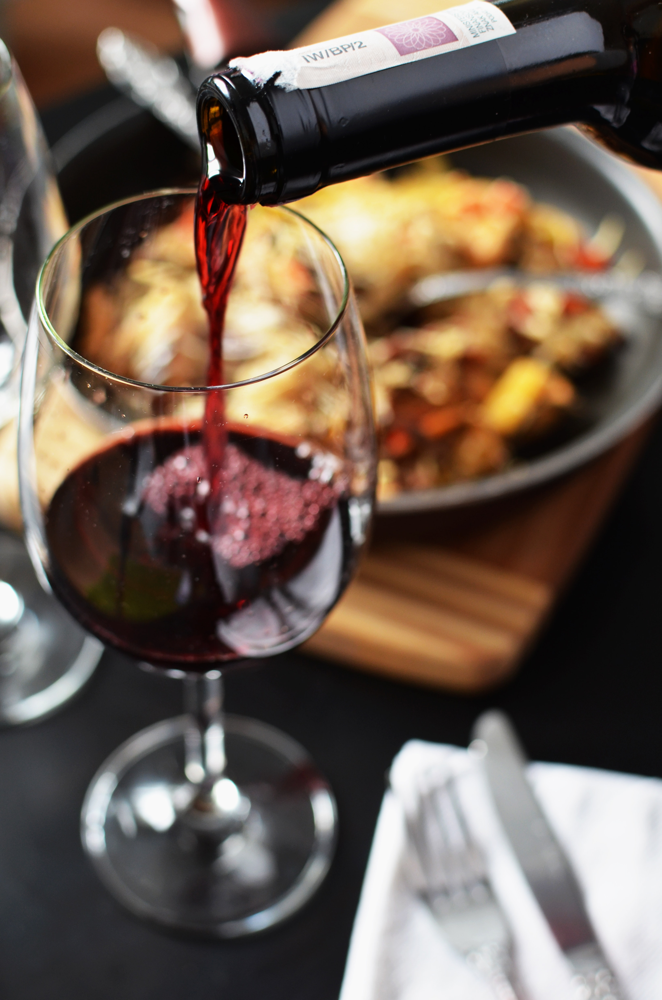
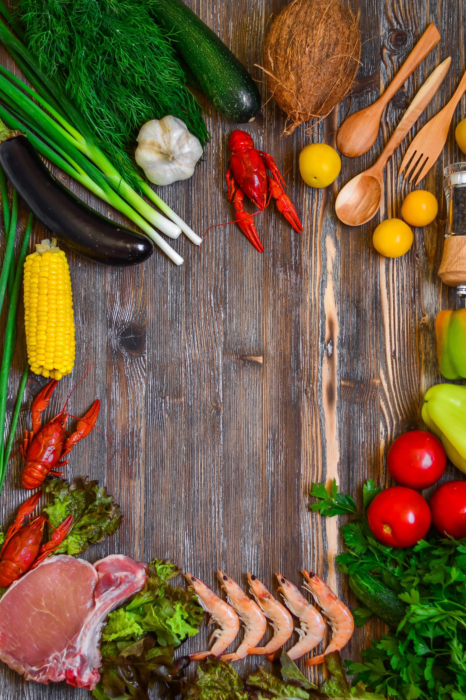

-Tjek vores andre artikler
-Morgenmadsartikler
-Frokostartikler
-Aftensmadsartikler
Aftensmad til fornuftige penge
AF / Andreas Kamp
Foto / Fotograf - Andreas Kamp
Er du studerende på SU, eller drømmer du om, at spare penge på dit madbudget, så er det nu du skal læse med.
I følgende artikel kommer der ideer og sparetips til fantastisk velsmagende og billig aftensmad.
For at, at spare penge på dit madbudget, er det først og fremmest vigtigt at handle i discountbutikker,
da deres priser er SU venlige.
Man kan nemlig sagtens leve godt på et beskedent budget, men det kræver, at man tænker sig om.
Hold øje med tilbudsvarer, og hvis du ikke er kræsen, er datovarer simpelthen nøglen til mere
økonomisk råderum.
En af de første klassikere discountbutikkernes råvarer kan tilbyde studerende er tomatsaucen.
Den er genial fordi den kan bruges på så mange måder. Den kan spises med ris eller pasta,
eller trylles om til en suppe blot ved, at tilsætte bouillon eller fløde.
Der er en række andre retter som er skabt til studerende, en af de oplagte valg, er den vegetariske gryderet.
Den kan laves med løg, blomkål, ærter og kartofler. Hav altid her et åbent øje for vare på tilbud, de kan sagtens
supplere retten. Det er kun fantasien der sætter grænser i køkkenet.
For at gøre retten mere interessant er det her vigtigt, at retten krydres
efter smag og behag. En dåse flåede tomater, en dåse kokosmælk og en rundhåndet omgang salt, så er sovsen i hus.
Et andet og meget besparende tip, er, at man laver mad til mange dage. Det kan nemlig altid nedfryses og tøs op efter behov.